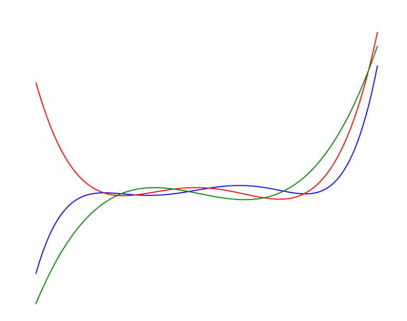
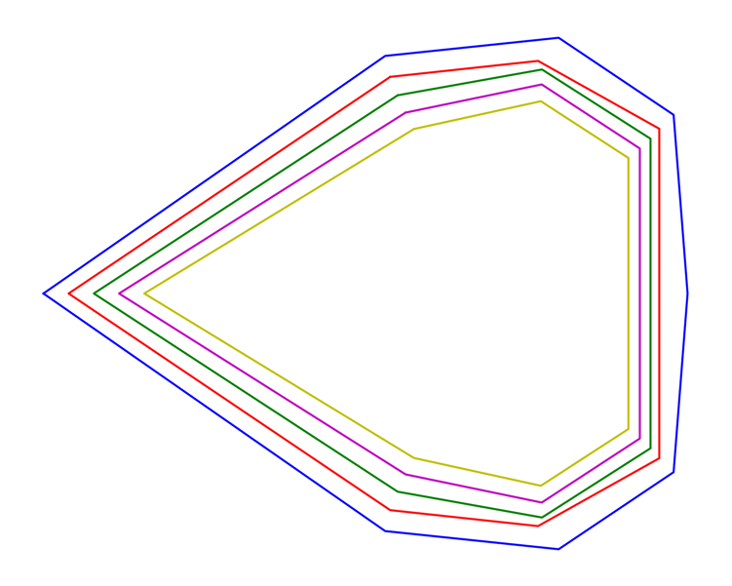
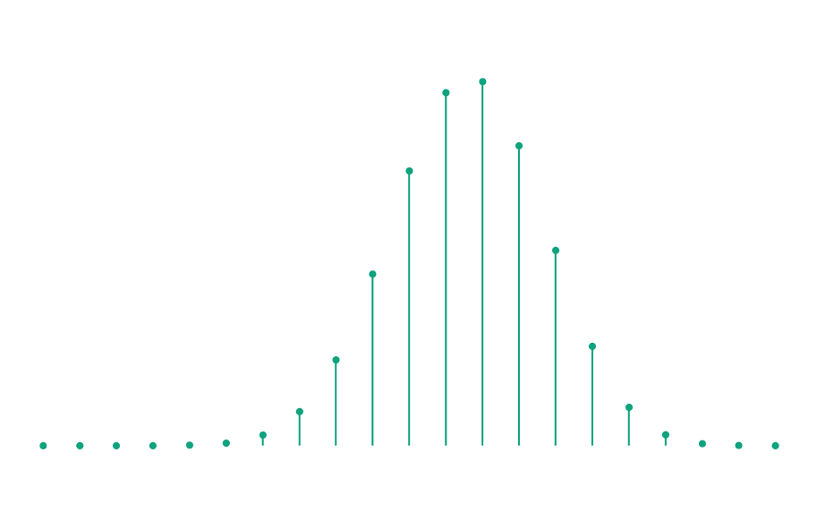

Instructor: Nathan Klein
Syllabus: Link
Lectures: Tuesday and Thursday, 3:30 - 4:45pm in CAS 320
Office Hours: Monday 3 - 4:30, Thursday 2 - 3:30, and by appointment, in CDS 1026
Prerequisites: Strong undergraduate-level familiarity with probability, multivariable calculus, linear algebra, and a little analysis. Mathematically mature undergraduates are welcome.
Grading: Homework (20%), participation (20%), quizzes (20%), and a final project (40%).
The starting point of the field is to encode combinatorial objects as multivariate polynomials. Typically, we will encode discrete probability distributions. For example, the distribution over \(\{e,f\}\) which selects \(\{e\}\) with probability \(1/2\) and \(\{e,f\}\) with probability \(1/2\) is encoded as \(p(x,y) = \frac{1}{2}x+\frac{1}{2}xy\). We will then analyze the zero-free regions of these polynomials in \(\mathbb{C}^n\). These regions often have underlying geometry, hence the name of the course. We will study how this geometry can help us understand the original combinatorial object.
We will discuss some important recent results that use ideas from this field, such as the resolution of the
Kadison-Singer problem, the proof of Mason's conjecture, and a slightly improved approximation for metric TSP.
More Details
For an example of this geometry, in the univariate case, we have the Gauss-Lucas theorem.
Below is a univariate polynomial \(p\) along with two of its derivatives:
We can see the geometry of the roots here: the set of roots of \(p'\) interlace the roots of \(p\). And below is the convex hull of the roots of \(p\) and its first four derivatives graphed in the complex plane. The Gauss-Lucas theorem states that for any polynomial \(p\) the convex hull of the roots of \(p'\) is contained in the convex hull of the roots of \(p\). So, applying it repeatedly gives a nested family of convex hulls, one for each derivative.

There is a natural generalization of this theorem to multivariate polynomials. It turns out that distributions whose encodings as polynomials have sufficiently structured zero-free regions must also have many other nice properties. For example, in the univariate case we can study real-rooted polynomials. Newton's inequalities tell us that the coefficients of any real-rooted polynomial are ultra log-concave, like the following:

This in turn tells us that any discrete random variable whose encoding (i.e., the encoding of its probability mass function) is real rooted is concentrated around its expectation.
After learning the basics about real-rooted polynomials and their multivariate analogs, real stable polynomials, we will see how this theory can be applied to problems in math and TCS.
Problem sets will be posted here over the course of the semester.